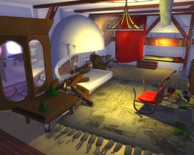
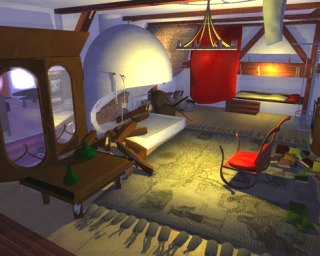
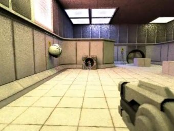
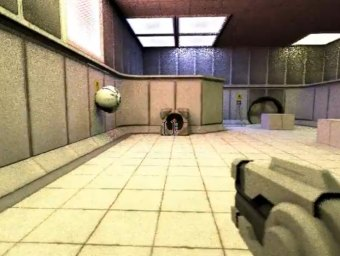
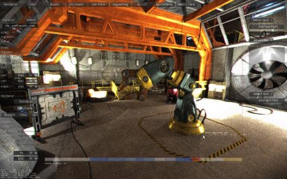

Ray Tracing / Path Tracing
The Arauna Real-time Ray Tracer
 

High-performance Whitted-style ray tracer, designed for
multi-core / SIMD-enabled CPUs. Used to build several
student games, including "Let
There Be Light", "A Time of
Light", "Pirates
on the Edge" and "Outbound".
The center image was rendered for Edge magazine. Arauna is
open source and can be used freely.
Downloads: "Arauna"
"Let
There Be Light" "A
Time Of Light" "Pirates
on the Edge"
Brigade 1 Path Tracer
  

Experimental path tracer, designed for games. Used for
several titles, including "Reflect"
and "It's
About Time" (later re-implemented
using Brigade 2). Brigade 1 uses all CPUs and GPUs for
rendering. As Brigade 2 was sold to OTOY, source code for
Brigade 1 is no longer available.
Brigade 2 Path Tracer
 
High-performance path tracer designed for interactive
applications.
Downloads: High quality trailer
for "It's About Time" (59MB)
Arauna2 Path Tracer
 
Experimental path tracer, with efficient sampling of complex
BRDFs and light sources. Video here.
Unnamed research renderer, under construction

Experimental renderer, implementing Vertex Connection
& Merging as well as bidirectional path tracing on the
GPU. More information to follow.
Other Projects
 Unnamed reference
software rasterizer, developed for a course on ray tracing
for games for the Czech Technical University in Prague.
Features: texture mapping with palette, scene graph,
sub-pixel and sub-texel correction. Unnamed reference
software rasterizer, developed for a course on ray tracing
for games for the Czech Technical University in Prague.
Features: texture mapping with palette, scene graph,
sub-pixel and sub-texel correction.
Download source
code (Visual Studio 2013 / 2015).
Unnamed OpenGL engine
with depth of field, shadow mapping for spotlights and point
lights, ambient occlusion and screen space reflections.
Hatched!: summer
family project. Full Android puzzle game, with 64 levels,
inspired by Eggerland (HAL).
The game was built on a custom C++ framework.
Get Hatched! now from the Play
Store and become my second customer. :)
|